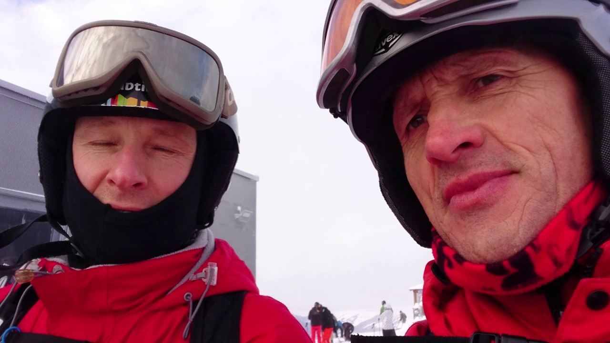
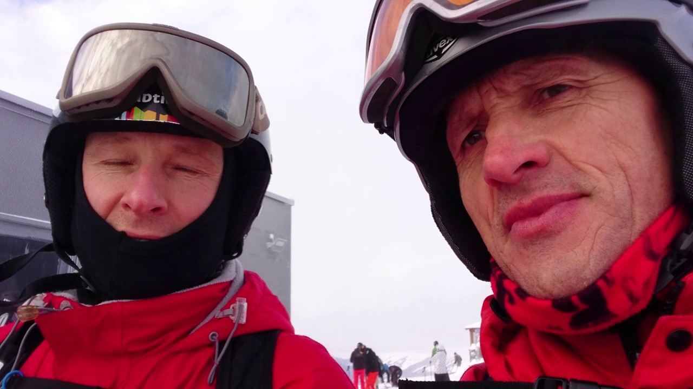

Slidinėjimas | Slidinėjimo kelionės į Europos kurortus | GRŪDA
2020.10.30 03:16
Užsakymo valdymas Užsakymo valdymas Įveskite duomenis žemiau ir galėsite peržiūrėti savo kelionės statusą ir atlikti reikalingus veiksmus [Toggle navigation] (8-5) 215 00 77 Vilnius Grūdos biurų kontaktai I-V 10:00 - 14:00, VI Nedirbame Kaunas: (8-37) 32 44 54 Klaipėda: (8-46) 31 17 43 Panevėžys: (8-45) 43 73 31 Mažeikiai: (8-443) 25 300 Buhalterija: (8-37) 40 41 67 Pagalba perkant: (8-37) 40 41 73 Grupėms: (8-37) 20 24 27
Užsakyti kelionę artimiausioje kelionių agentūroje Parašykite mums Agentūroms Išvykimų laikai Mano užsakymai Mano užsakymai Išvykimų laikai Agentūroms Kelionės autobusu Visos kelionės autobusu Artimiausios kelionės Savaitgalio kelionės Poilsis kalnuose Pažintinės kelionės Kelionės kartą metuose Naujametinės kelionės Poilsinės-pažintinės kelionės Kelionės laivais Kelionės visai šeimai Sezono naujienos Kelionės moksleiviams Slidinėjimo kelionės Kelionės po Lietuvą Poilsis Medikams Poilsis Mokytojams Kelionės po Lietuvą Viešbučiai Lietuvoje Kelionės lėktuvu Savaitgaliai ir kelionės po Europą su kelionių vadovu iš Lietuvos Kelionės su jungtine grupe Sezono naujienos Geriausi pasiūlymai Teztour kelionės Kidytour kelionės Visos kelionės lėktuvu Slidinėjimas Slidinėjimo kelionės autobusu Slidinėjimo kelionės lėktuvu Viešbučiai slidinėjimo kurortuose Teztour kelionės Novaturo kelionės Visos slidinėjimo kelionės Tolimi kraštai Geriausi pasiūlymai su profesionaliu vadovu iš Lietuvos Jungtinės kelionės. Išvykimas garantuotas net 1 keliautojui Keliauk individualiai Artimiausios kelionės Garantuoti išvykimai Sezono naujienos Visos tolimos kelionės Informacija Autobusų nuoma Draudimo paslaugos Kur įsigyti kelionę Lėktuvų bilietai Kaip pirkti internetu? Kelionės sutartis Svarbi informacija ir patarimai keliautojams Kelionės pirkimas išsimokėtinai Nuolaidos Išvykimo vietos ir laikai Kelionių įspūdžiai/straipsniai Asmens duomenų tvarkymo taisyklės Privatumo politika Garsinis gidas KUPONAS Kontaktai Padėsime užsisakyti Grūdos biurų kontaktai
I-V 10:00 - 14:00, VI Nedirbame Vilnius: (8-5) 215 00 77 Kaunas: (8-37) 32 44 54 Klaipėda: (8-46) 31 17 43 Panevėžys: (8-45) 43 73 31 Mažeikiai: (8-443) 25 300 Buhalterija: (8-37) 40 41 67 Pagalba perkant: (8-37) 40 41 73 Grupėms: (8-37) 20 24 27 Užsakymas el. paštu Užsakyti kelionę artimiausioje Pagrindinis Slidinėjimas (9)
Slidinėjimas
Rodyti pagal: kainą min. - maks. kainą maks. - min. pavadinimą A - Z pavadinimą Z - A didžiausią nuolaidą išvykimo datą paieška 4.8/5 -15%Slidinėjimas Italijoje (Alpe Cimbra) 9d.
2021.01.16 - 01.24 vietų yra 2021.02.13 - 02.21 vietų yra Daugiau datų Daugiau datų Kaina nuo: 699 € -15% 594.15 € 594.15 € 2021.01.16 - 01.24 vietų yra 699 € -15% 594.15 € 2021.02.13 - 02.21 vietų yra 799 € -15% 679.15 € Mažiau datų -2% Pirk kelionę internetuGauk papildomą nuolaidą 4.9/5 -15%
Slidinėjimas Ukrainoje (Bukovelis) 5d.
2020.12.25 - 12.29 vietų yra 2020.12.26 - 12.30 vietų yra 2020.12.30 - 01.03 vietų yra 2021.01.02 - 01.06 2021.01.06 - 01.10 vietų yra 2021.01.20 - 01.24 2021.01.27 - 01.31 2021.02.03 - 02.07 vietų yra 2021.02.13 - 02.17 vietų yra 2021.02.17 - 02.21 vietų yra 2021.02.24 - 02.28 vietų yra 2021.03.03 - 03.07 vietų yra 2021.03.10 - 03.14 vietų yra Daugiau datų Daugiau datų Kaina nuo: 269 € -15% 211.65 € 211.65 € 2020.12.25 - 12.29 vietų yra 269 € -15% 228.65 € 2020.12.26 - 12.30 vietų yra 269 € -15% 228.65 € 2020.12.30 - 01.03 vietų yra 309 € -15% 262.65 € 2021.01.02 - 01.06 259 € -15% 220.15 € 2021.01.06 - 01.10 vietų yra 259 € -15% 220.15 € 2021.01.20 - 01.24 259 € -15% 220.15 € 2021.01.27 - 01.31 259 € -15% 220.15 € 2021.02.03 - 02.07 vietų yra 259 € -15% 220.15 € 2021.02.13 - 02.17 vietų yra 259 € -15% 220.15 € 2021.02.17 - 02.21 vietų yra 259 € -15% 220.15 € 2021.02.24 - 02.28 vietų yra 249 € -15% 211.65 € 2021.03.03 - 03.07 vietų yra 249 € -15% 211.65 € 2021.03.10 - 03.14 vietų yra 249 € -15% 211.65 € Mažiau datų -2% Pirk kelionę internetuGauk papildomą nuolaidą -15%
Slidinėjimas Ukrainoje (Bukovelis) 6d.
2020.12.29 - 01.03 vietų yra 2021.01.04 - 01.09 vietų yra 2021.01.25 - 01.30 vietų yra 2021.02.15 - 02.20 vietų yra 2021.03.08 - 03.13 vietų yra Daugiau datų Daugiau datų Kaina nuo: 319 € -15% 245.65 € 245.65 € 2020.12.29 - 01.03 vietų yra 319 € -15% 271.15 € 2021.01.04 - 01.09 vietų yra 309 € -15% 262.65 € 2021.01.25 - 01.30 vietų yra 299 € -15% 254.15 € 2021.02.15 - 02.20 vietų yra 299 € -15% 254.15 € 2021.03.08 - 03.13 vietų yra 289 € -15% 245.65 € Mažiau datų -2% Pirk kelionę internetuGauk papildomą nuolaidą 4.9/5 -15%
Slidinėjimas Ukrainoje (Bukovelis) 7d.
2021.01.24 - 01.30 vietų yra 2021.02.14 - 02.20 vietų yra Daugiau datų Daugiau datų Kaina nuo: 349 € -15% 296.65 € 296.65 € 2021.01.24 - 01.30 vietų yra 349 € -15% 296.65 € 2021.02.14 - 02.20 vietų yra 359 € -15% 305.15 € Mažiau datų -2% Pirk kelionę internetuGauk papildomą nuolaidą 5/5 -15%
Slidinėjimo safaris Austrijos - Šveicarijos Alpėse 9d.
2020.12.26 - 01.03 vietų yra 2021.02.20 - 02.28 vietų yra Daugiau datų Daugiau datų Kaina nuo: 729 € -15% 551.65 € 551.65 € 2020.12.26 - 01.03 vietų yra 729 € -15% 619.65 € 2021.02.20 - 02.28 vietų yra 649 € -15% 551.65 € Mažiau datų -2% Pirk kelionę internetuGauk papildomą nuolaidą 4.7/5 -15%
Slidinėjimas Slovakijoje (Žemieji Tatrai) 5d.
2020.12.26 - 12.30 vietų yra 2020.12.30 - 01.03 vietų yra 2021.01.13 - 01.17 vietų yra 2021.01.27 - 01.31 vietų yra 2021.02.13 - 02.17 vietų yra 2021.02.27 - 03.03 vietų yra 2021.03.10 - 03.14 vietų yra Daugiau datų Daugiau datų Kaina nuo: 309 € -15% 237.15 € 237.15 € 2020.12.26 - 12.30 vietų yra 309 € -15% 262.65 € 2020.12.30 - 01.03 vietų yra 319 € -15% 271.15 € 2021.01.13 - 01.17 vietų yra 279 € -15% 237.15 € 2021.01.27 - 01.31 vietų yra 279 € -15% 237.15 € 2021.02.13 - 02.17 vietų yra 289 € -15% 245.65 € 2021.02.27 - 03.03 vietų yra 289 € -15% 245.65 € 2021.03.10 - 03.14 vietų yra 279 € -15% 237.15 € Mažiau datų -2% Pirk kelionę internetuGauk papildomą nuolaidą 4.7/5 -15%
Slidinėjimas Slovakijoje (Žemieji Tatrai) 8d.
2021.01.30 - 02.06 vietų yra 2021.02.13 - 02.20 vietų yra 2021.03.06 - 03.13 vietų yra Daugiau datų Daugiau datų Kaina nuo: 379 € -15% 322.15 € 322.15 € 2021.01.30 - 02.06 vietų yra 379 € -15% 322.15 € 2021.02.13 - 02.20 vietų yra 379 € -15% 322.15 € 2021.03.06 - 03.13 vietų yra 379 € -15% 322.15 € Mažiau datų -2% Pirk kelionę internetuGauk papildomą nuolaidą -15%
Slidinėjimas Slovakijoje (Žemieji Tatrai) 7d.
2021.01.30 - 02.05 vietų yra 2021.03.06 - 03.12 vietų yra Daugiau datų Daugiau datų Kaina nuo: 379 € -15% 322.15 € 322.15 € 2021.01.30 - 02.05 vietų yra 379 € -15% 322.15 € 2021.03.06 - 03.12 vietų yra 379 € -15% 322.15 € Mažiau datų -2% Pirk kelionę internetuGauk papildomą nuolaidą 5/5 -15%
Slidinėjimo safaris Italijos Dolomitinėse Alpėse 10d.
2021.01.22 - 01.31 vietų yra 2021.02.12 - 02.21 vietų yra Daugiau datų Daugiau datų Kaina nuo: 729 € -15% 619.65 € 619.65 € 2021.01.22 - 01.31 vietų yra 729 € -15% 619.65 € 2021.02.12 - 02.21 vietų yra 729 € -15% 619.65 € Mažiau datų -2% Pirk kelionę internetuGauk papildomą nuolaidą
Slidinėjimo kelionės - dabar geresnėmis kainomis! Slidinėjimas Austrijoje. Slidinėjimas Slovakijoje. Slidinėjimas Italijoje. Slidinėjimas Ukrainoje. Slidinėjimas Čekijoje. Slidinėjimas Prancūzijoje. Slidinėjimas Šveicarijoje. Slidinėjimo kelionės autobusu. Slidinėjimo kelionės lėktuvu. Slidinėjimo pasiūlymai. Slidinėjimas individualiai. Apgyvendinimo pasiūlymai slidininkams.
Geriausi pasiūlymai - tiesiai į Jūsų pašto dėžutę užsakyti Užsiprenumeruodamas (-a) sutinku su privatumo politika. Dėkojame, Jūs sėkmingai užsisakėte mūsų naujienlaiškį! GRŪDA kelionių organizatorius Kodėl mes? Apie mus Kontaktai Karjera Naujienos Nuotraukų albumas Kelionių įspūdžiai/straipsniai Atsisiųskite mūsų kelionių katalogą Atsisiųskite katalogą Skambinkite mums I-V 10:00 - 14:00, VI Nedirbame Vilnius: (8-5) 215 00 77 Kaunas: (8-37) 32 44 54 Klaipėda: (8-46) 31 17 43 Panevėžys: (8-45) 43 73 31 Mažeikiai: (8-443) 25 300 Buhalterija: (8-37) 40 41 67 Pagalba perkant: (8-37) 40 41 73 Grupėms: (8-37) 20 24 27Kelionę taip pat galite užsakyti artimiausioje kelionių agentūroje Bendraukime
internetu Turite klausimų ar norite užsakyti kelionę? siųsti užklausą Draugaukime © Kelionių organizatorius - Kauno Grūda , 2018. Visos teisės saugomos.
Papildomas Kelionių organizatoriaus prievolių įvykdymo užtikrinimo draudimo liudijimo numeris: AAS „BTA Baltic Insurance Company KOFG Nr. 000868. Viršuliškių skg. 34,
LT-05132 Vilnius, Lietuva. Kelionių organizatoriaus pažymėjimo Nr. 012758 Web sprendimas: dizainas: programavimas:
- slidinėjimas | Mindaugo blogas
- Slidinėjimas - Blogger
- Slidinėjimo akademija
- Lygumų slidinėjimas (XC)
- Lėktuvu Archives - Slidinėjimas
- kalnumagija - Kalnų slidinėjimo blogas
- Lietuvos nacionalinė slidinėjimo asociacija
- Slidinėjimo kelionės
- slidinėjimas
- Slidinėjimas | Slidinėjimo kelionės | Slidinėjimo kurortai ...
- slidinėjimas | Mindaugo blogas
Iš pradžių tai buvo tik idėja tapti juridiniu vienetu, kad būtų galima oficialiai prašyti paramos, nes kalnų slidinėjimas lietuviams –… Į Pjongčangą – perrašyti istorijos 17. lapkričio 2017
- Slidinėjimas - Blogger
Slidinėjimas. Tik geriausi pasiūlymai slidinėjimo kelionėms į Austriją, Italiją, Slovakiją, Prancūziją ir kt. šalis vykstant autobusu, lėktuvu, savo ...
- Slidinėjimo akademija
Slidinėjimo kelionės - apsilankykite ir išsirinkite šalį, kelionės datą, bei pasinerkite į nepaprastą nuotykį. Visi išvykimai garantuoti!
- Lygumų slidinėjimas (XC)
Slidinėjimas yra originalus ir atsižvelgiant į dalyvių skaičių, viena iš skaitilngiausių šiaurinių („nordic“) sporto šakų, kurios vadinamos šiaurinėmis dėl kilmės geografine prasme, kadangi išsivystė šiaurinėje Europos dalyje, priešingai nei kalnų „alpine skiing “slidinėjimas, kurio kilmė siejama su Alpėmis.
- Lėktuvu Archives - Slidinėjimas
Slidinėjimo Akademijoje apsilankė ypatingas svečias - Lietuvos Respublikos Prezidentė. Ji ne tik domėjosi, kaip mums sekasi, stebėjo slidinėjančius klientus, bet ir susidomėjusi klausėsi apie vienintelę tokią sporto ir laisvalaikio erdvę ne tik Lietuvoje, bet ir visose Baltijos šalyse, kasdien sutraukiančią šimtus žiemos sporto gerbėjų.
- kalnumagija - Kalnų slidinėjimo blogas
Slidinėjimas 250 kilometrų trasų turinčiame Serre Chevalier yra tarsi kelionė: nuo neįprastai aukštai čia augančių medžių vainikų leisdamiesi žemyn jausitės, lyg čiuožtumėte per skirtingas šalis ir kraštovaizdžius.
- Lietuvos nacionalinė slidinėjimo asociacija
Slidinėjimas ir čiuožimas snieglente yra nesuvaržytos sporto šakos, kur kiekvienas gali judėti kur ir kaip tik nori, su sąlyga, kad jie laikysis taisyklių ir čiuoš atsižvelgdami į savo asmeninius gebėjimus ir kalnuose vyraujančią padėtį. Slidininkas ar snieglenintininkas priešakyje turi pirmumo teisę.
- Slidinėjimo kelionės
slidinėjimas Lyguminių slidžių video žiemai/vasarai. June 6, 2014 June 6, 2014 karalius Laisvalaikis/Hobbies laisvalaikis, slidinėjimas, vasara, žiema. Labai paprastas, bet tuo pačiu daug parodantis apie techniką ir slidinėjimo būdus žiemą vasarą su lyguminėmis slidėmis. Vilniuje jau taip pat atsiranda vienas kitas “vasarinis ...
- slidinėjimas
slidinėjimas statusas T sritis Kūno kultūra ir sportas apibrėžtis Kai kurių žiemos sporto šakų (biatlono, slidinėjimo dvikovės) varžybų sudedamoji dalis.atitikmenys: angl. skiing vok. Skisport, m rus. лыжный спортrus. лыжный спорт
- Slidinėjimas | Slidinėjimo kelionės | Slidinėjimo kurortai ...
Slidinėjimas Ötztal Pagrindiniai slidinėjimo kurortai : Obergurgl-Hochgurgl trasų 112 km, mėlynų 60 km, raudonų 33 km, juodų 14 km, aukščiai 1800 - 3030 m virš jūros lygio. Sölden trasų 146 km, mė...
Iš pradžių tai buvo tik idėja tapti juridiniu vienetu, kad būtų galima oficialiai prašyti paramos, nes kalnų slidinėjimas lietuviams –… Į Pjongčangą – perrašyti istorijos 17. lapkričio 2017
Slidinėjimas. Tik geriausi pasiūlymai slidinėjimo kelionėms į Austriją, Italiją, Slovakiją, Prancūziją ir kt. šalis vykstant autobusu, lėktuvu, savo ...
Slidinėjimo kelionės - apsilankykite ir išsirinkite šalį, kelionės datą, bei pasinerkite į nepaprastą nuotykį. Visi išvykimai garantuoti!
Slidinėjimas yra originalus ir atsižvelgiant į dalyvių skaičių, viena iš skaitilngiausių šiaurinių („nordic“) sporto šakų, kurios vadinamos šiaurinėmis dėl kilmės geografine prasme, kadangi išsivystė šiaurinėje Europos dalyje, priešingai nei kalnų „alpine skiing “slidinėjimas, kurio kilmė siejama su Alpėmis.
Slidinėjimo Akademijoje apsilankė ypatingas svečias - Lietuvos Respublikos Prezidentė. Ji ne tik domėjosi, kaip mums sekasi, stebėjo slidinėjančius klientus, bet ir susidomėjusi klausėsi apie vienintelę tokią sporto ir laisvalaikio erdvę ne tik Lietuvoje, bet ir visose Baltijos šalyse, kasdien sutraukiančią šimtus žiemos sporto gerbėjų.
Slidinėjimas 250 kilometrų trasų turinčiame Serre Chevalier yra tarsi kelionė: nuo neįprastai aukštai čia augančių medžių vainikų leisdamiesi žemyn jausitės, lyg čiuožtumėte per skirtingas šalis ir kraštovaizdžius.
Slidinėjimas ir čiuožimas snieglente yra nesuvaržytos sporto šakos, kur kiekvienas gali judėti kur ir kaip tik nori, su sąlyga, kad jie laikysis taisyklių ir čiuoš atsižvelgdami į savo asmeninius gebėjimus ir kalnuose vyraujančią padėtį. Slidininkas ar snieglenintininkas priešakyje turi pirmumo teisę.
slidinėjimas Lyguminių slidžių video žiemai/vasarai. June 6, 2014 June 6, 2014 karalius Laisvalaikis/Hobbies laisvalaikis, slidinėjimas, vasara, žiema. Labai paprastas, bet tuo pačiu daug parodantis apie techniką ir slidinėjimo būdus žiemą vasarą su lyguminėmis slidėmis. Vilniuje jau taip pat atsiranda vienas kitas “vasarinis ...
slidinėjimas statusas T sritis Kūno kultūra ir sportas apibrėžtis Kai kurių žiemos sporto šakų (biatlono, slidinėjimo dvikovės) varžybų sudedamoji dalis.atitikmenys: angl. skiing vok. Skisport, m rus. лыжный спортrus. лыжный спорт
Slidinėjimas Ötztal Pagrindiniai slidinėjimo kurortai : Obergurgl-Hochgurgl trasų 112 km, mėlynų 60 km, raudonų 33 km, juodų 14 km, aukščiai 1800 - 3030 m virš jūros lygio. Sölden trasų 146 km, mė...
 
